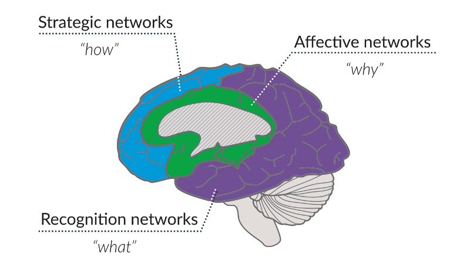
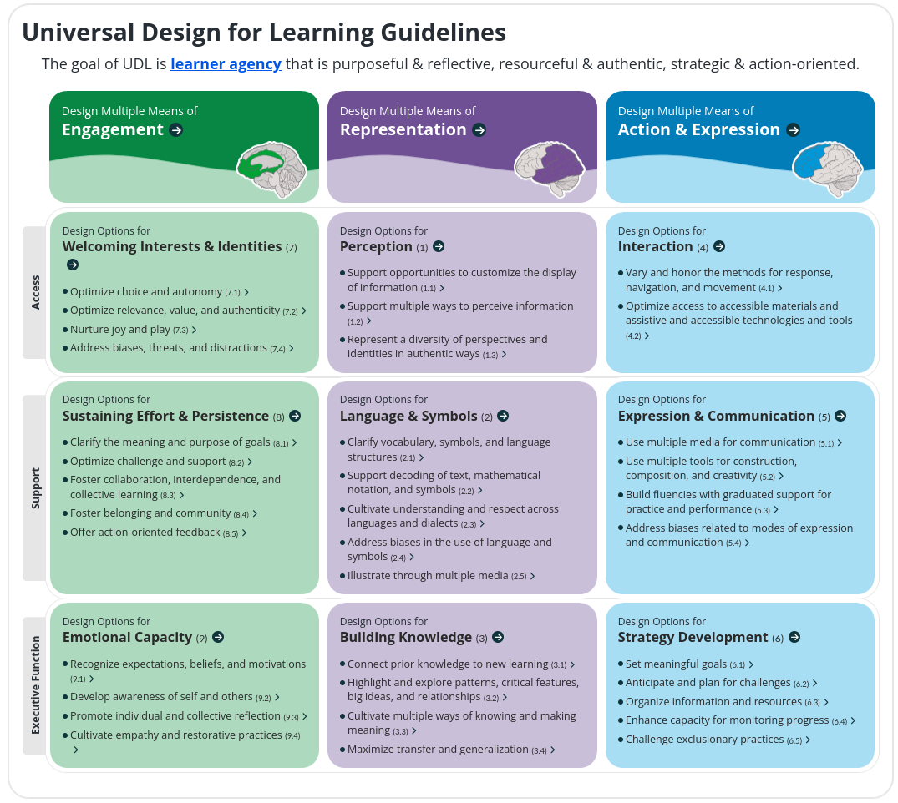
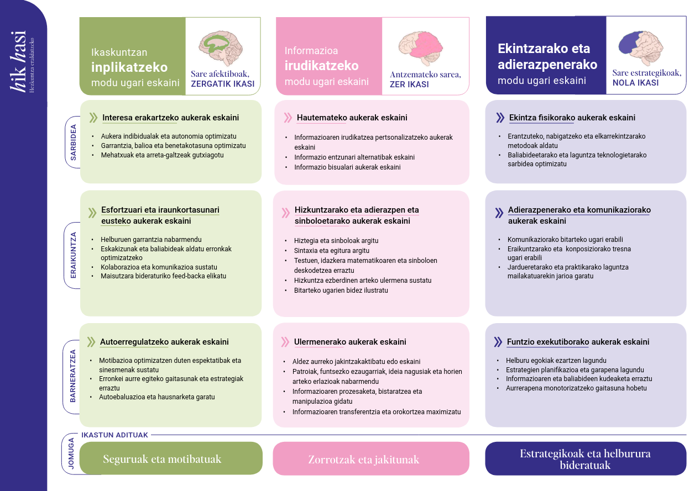
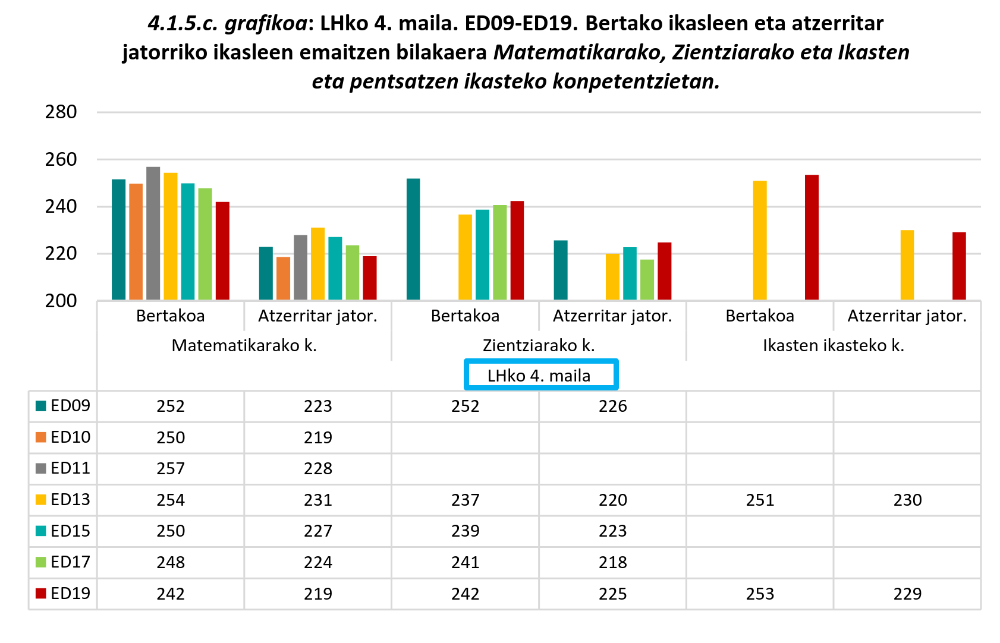

10 Ikaskuntzarako Diseinu Unibertsala eta hizkuntza
Baliabide nagusiak: (CAST, 2018; Hasi, 2024a, 2024b; Hezkuntza Saila, 2023a, 2023b; Ralabate eta Nelson, 2017) *
https://udlguidelines.cast.org/more/downloads/
Arkitekturaren mundutik etorri zaigun kontzeptua da Diseinu Unibertsala. Irakaskuntzara orain dela hogei bat urte ekarri bazen ere, oraintsuko lege eta arauetan sartu den arte hezkuntzako publiko nagusi batek ez du ezagutzen izan.
Marko honek erantzun nahi die ikasleen aniztasunei, irakaskuntza denentzat benetan izan dadin; ikuskera pedagogiko eta didaktikorik ere bai, ez soilik lege eta kudeaketa mailan.
Kapitulu honetan hasieran begiratzen zaio arau eskakizunari, gero Ikaskuntzarako Diseinu Unibertsalaren planteamenduko egiturari eta azken atalean hezkuntza ikuskera elebidunetik argitaratutako gidan oinarrituta, zenbait gomendio eta hausnarbide eskaintzen da.
Consider for example, Standard 19 from the draft of the Massachusetts English Language Art Curriculum Frameworks, which states, ” Students will write compositions, such as narratives, summaries, essays, letters, or directions, with a clear focus supported by logically related ideas and sufficient details” (March 2000). While this standard provides students with options for written expression, such as essays, directions, etc., this standard is not considerate to all learners. The fact that the standard requires writing focuses the process on text alone. Yet the processes of creating these compositions and learning the skills necessary to summarize, express ideas, provide directions and support one’s work with logical ideas and details can also be learned using other media, singly or in conjunction with text. Some students with disabilities or particular learning preferences might more effectively learn these skills using digitally recorded speech, diagrams, graphics, video, or other multimedia tools. Substituting the word “create” for “write” broadens this standard to address the learning needs of all students, and consequently, provides multiple pathways to reaching the goal, and enables the use of multiple kinds of materials
Rose (2000)
10.1 Curriculum dekretuetan
Xedapen orokorretan
– Curriculumerako sarbidearen unibertsaltasuna. Guztiek kalitatezko hezkuntza jasotzeko aukera izatea ekarriko du, eta benetako integraziorako, aukera-berdintasunerako, erabateko parte-hartzerako eta eskola-arrakastarako bidea markatuko du. Ikaskuntzarako diseinu unibertsala hartuko da aintzat irakaskuntza- eta ikaskuntza-prozesuetan.
Hezkuntza Saila (2023a)
I. kapitulua 2. artikulua.– Definizioak.
- Ikaskuntzarako diseinu unibertsala (IDU): curriculuma garatzeko printzipioak dira, haur guztiei hezkuntzarako sarbidean aukera-berdintasuna ematen dietenak, eta haien helburua benetako inklusioa eta parte-hartzea lortzea da, ikasle guztientzat ikaskuntzarako oztopoak minimizatuz eta ikasteko aukerak maximizatuz
Hezkuntza Saila (2023a)
- Ikaskuntzarako diseinu unibertsala (IDU): curriculuma garatzeko printzipioak dira, ikasle guztiei hezkuntzarako sarbidean aukera-berdintasuna ematen dietenak, eta haien helburua benetako inklusio eta parte-hartzea lortzea da, ikasle guztientzat ikaskuntzarako oztopoak minimizatuz eta ikasteko aukerak maximizatuz.
Hezkuntza Saila (2023b)
5. artikulua.– Haur Hezkuntzaren printzipio orokorrak.
6.– Helburu horrekin berarekin, hartzen diren antolaketa-, metodologia-eta curriculum-neurriek ikaskuntzarako diseinu unibertsalaren printzipioei jarraituko diete.
Hezkuntza Saila (2023a)
6. artikulua.– Oinarrizko Hezkuntzaren printzipio pedagogikoak.
3.– Honako hauek bermatu behar dira: hezkuntza- eta hizkuntza-inklusioa; arreta pertsonalizatua; ikasleek ikastetxeko egituretan eta elkarbizitzan parte hartzea; ikasteko zailtasun espezifikoak eta gaitasun handiko ikasleak goiz hautematea, eta laguntzeko eta malgutzeko mekanismoak, alternatiba metodologikoak eta beharrezkoak diren beste neurri batzuk abian jartzea. Hezkuntza-inklusioa bermatzeko hartzen diren antolaketa-, metodologia- eta curriculum-neurriak Ikaskuntzarako Diseinu Unibertsalaren printzipioei jarraitu behar diete, pertsona guztiek hezkuntza-arrakasta lortu dezaten.
Hezkuntza Saila (2023b)
18. artikulua.– Aniztasunari hezkuntza-erantzuna ematea hezkuntza-sistema inklusiboaren esparruan.
5.– Ikastetxeei dagokie ikaskuntzarako diseinu unibertsalaren ikuspegian oinarritutako elkarbizitza- eta ikaskuntza-ingurune seguruak sortzea eta eraginkortasunez ziurtatzea etapa batetik besterako urratsak eta prestakuntza-ibilbideak.
Hezkuntza Saila (2023a)
23. artikulua.– Hezkuntza-erantzuna hezkuntza-sistema inklusiboaren esparruan.
5.– Ikastetxeei dagokie ikaskuntzarako diseinu unibertsalaren ikuspegian oinarritutako elkarbizitza- eta ikaskuntza-ingurune seguruak sortzea eta eraginkortasunez ziurtatzea etapa batetik besterako urratsak eta prestakuntzako ibilbidea.
Hezkuntza Saila (2023b)
Maiatzaren 30eko 77/2023 Dekretuaren V. eranskina Ikas-egoerak
…
c. Ikas-egoeraren curriculum- eta antolamendu-elementuak:Faseen arabera antolatutako jardueren proposamena: hasierako fasea, garapenekoa eta amaierakoa. Ikaskuntza-jarduerena zein ebaluazio-jarduerena. Barnean direla Ikaskuntzarako Diseinu Unibertsaleko estrategiak eta ebaluazio-adierazleak, fase bakoitzean.
Hezkuntza Saila (2023b)
10.2 IDUko egitura
IDUk oinarria bikoitza du, irakaskuntza esperientzia eta neurozientzia. Horrela, neurozientziaren aurkikuntzak ikasgelara bideratzea du helburu, benetako inklusioa lortze aldera. Horrela, denek ikasi ahal izateko didaktika diseinua eskaini nahi du hiru ardatzetan ulertuta
IDUren oinarrian neurozientzia dago. Izan ere, garunek ikasketa prozesuetan nola funtzionatzen duten azaldu dute neurozientziako ikerketek, eta horiek asko lagundu dute garunen egiturak eta funtzionamenduak ulertzen. Ikaskuntza prozesuetan bereziki hiru sare neuronalek garrantzia handia dutela erakutsi du neurozientziak: sare afektiboak, antzemateko sareak eta sare estrategikoak
Hasi (2024b)


Bertsioak hainbat izan diren arren, hemen erabiliko dugu 2.2 bertsioa (CAST, 2018) horrek Hik Hasi aldizkariak euskaratutako bertsioa baitu; hala ere, 2024.urtean 3. bertsioa (CAST, 2024) argitaratu dela jakin beza ikasleak edo bestelako irakurleak. Bertsio horrek ingelesez interaktiboki nabigatzeko aukera du webgunean1.
10.2.1 Printzipioak
Oinarri zientifikoetan ezarri nahi du eta horretarako neurozientzia darabil. IDU eraikitzen da identifikatutako hiru neurona-sare kontuan izanda:
- Sare afektiboa:
Ikaskuntzarako inplikazioarekin lotzen da eta zergatik ikasi galderari erantzuteari begiratzen dio.
Printzipio nagusia: Ikaskuntzan inplikatzeko modu ugari eskaini - Antzemateko sarea:
Informazioa irudikatzean dihardu sareak, hau da, zer ikasi galderaren erantzunarekin lotzen da.
Printzipio nagusia: Informazioa irudikatzeko modu ugari eskaini - Sare estrategikoa:
Ekintzarekin lotutako neurona-sare honetan dautza planifikazioa, ekintza, prozesuen gaineko monitorizazioa eta abar; hots, nola ikasi galderarekin lotua.
Printzipio nagusia: Ekintzarako eta adierazpenerako modu ugari eskaini
IDUk proposatzen du hiru neurona-sare / jardun-inguru horietan forma ugari eskaini beharra, ikasleri osoari erantzuteko eta ez berez inon ez den ikasle estandar multzoari.

10.2.2 Ereduak
Oinarri nagusiok aurrera eramateko hiruna eredu ematen dira, eredu bat sarrerarako, beste bat eraikuntzarako eta azkena barneratzeko.
Ikaskuntzan inplikatzeko modu ugari eskaintzea
Interesa erakartzeko aukerak
Esfortzuari eta iraunkortasunari eusteko aukerak
Auto-erregulaziorako aukerak
Informazioa irudikatzeko modu ugari eskaintzea
Pertzepziorako aukerak
Hizkuntzarako, adierazpen matematikoetarako eta sinboloetarako aukerak
Ulermenerako aukerak
Ekintzarako eta adierazpenerako modu ugari eskaintzea
Ekintza fisikorako aukerak
Adierazpenerako eta komunikaziorako aukerak
Funtzio exekutiboetarako aukerak
10.2.3 Egiaztatze puntuak eta jomugak
IDUn planteatzen da diseinatzeko orduan zenbait puntu aztertu beharra; egiaztatze puntu izena ematen zaie. Eta horien lotura ezartzen da hezkuntza xede banarekin, jomuga izenez aipatzen direnak.
10.2.3.1 Ikaskuntzan inplikatzeaz
Sarrera: Interesa erakartzeko aukerak eskaini
Aukera indibidualak eta autonomia optimizatu
Garrantzia, balioa eta benetakotasuna optimizatu
Mehatxuak eta arreta-galtzeak gutxiagotu
Eraikuntza: Esfortzuari eta iraunkortasunari eusteko aukerak eskaini
Helburuen garrantzia nabarmendu
Eskakizunak eta baliabideak aldatu erronkak optimizatzeko
Kolaborazioa eta komunikazioa sustatu
Maisutzara bideraturiko feed-backa elikatu
Barneratzea: Autoerregulatzeko aukerak eskaini
Motibazioa optimizatzen duten espektatibak eta sinesmenak sustatu
Erronkei aurre egiteko gaitasunak eta estrategiak erraztu
Autoebaluazioa eta hausnarketa garatu
Jomuga: ikastun seguru eta motibatuak
10.2.3.2 Informazioa irudikatzeaz
Sarrera: Hautemateko aukerak eskaini
Informazioaren irudikatzea pertsonalizatzeko aukerak eskaini
Informazio entzunari alternatibak eskaini
Informazio bisualari aukerak eskaini
Eraikuntza: Hizkuntzarako eta adierazpen eta sinboloetarako aukerak eskaini
Hiztegia eta sinboloak argitu
Sintaxia eta egitura argitu
Testuen, idazkera matematikoaren eta sinboloen deskodetzea erraztu
Hizkuntza ezberdinen arteko ulermena sustatu
Bitarteko ugarien bidez ilustratu
Barneratzea: Ulermenerako aukerak eskaini
Aldez aurreko jakintzak aktibatu edo eskaini
Patroiak, funtsezko ezaugarriak, ideia nagusiak eta horien arteko erlazioak nabarmendu
Informazioaren prozesaketa, bistaratzea eta manipulazioa gidatu
Informazioaren transferentzia eta orokortzea maximizatu
Jomuga: ikastun zorrotzak eta jakitunak
Ekintzaz eta adierazpenaz
Sarrera: Ekintza fisikorako aukerak eskaini
Erantzuteko, nabigatzeko eta elkarrekintzarako metodoak aldatu
Baliabideetarako eta laguntza teknologietarako sarbidea optimizatu
Eraikuntza: Adierazpenerako eta komunikaziorako aukerak eskaini
Komunikaziorako bitarteko ugari erabili
Eraikuntzarako eta konposiziorako tresna ugari erabili
Jardueretarako eta praktikarako laguntza mailakatuarekin jarioa garatu
Barneratzea: Funtzio exekutiborako aukerak eskaini
Helburu egokiak ezartzen lagundu
Estrategien planifikazioa eta garapena lagundu
Informazioaren eta baliabideen kudeaketa erraztu
Aurrerapena monitorizatzeko gaitasuna hobetu
Jomuga: ikastun estrategikoak eta helburura bideratuak
10.3 IDU eta hizkuntzak
Hizkuntzaren gaiari IDUaren lehenengo planteamenduetatik oratu zitzaion, gai honen hasieran ikusten denez, (Rose, 2000), baina gure hezkuntza inguruaren ezaugarriak kontuan izanik, ez da apenas argitalpenik. Sumertsio linguistikoaren errealitateari eta aurre egiteari eta HEBI / CLIL ikuskerei begiratzen dioten zenbait argitalpen badira ere, seguruenera Ralabate eta Nelsonen argitalpena (Ralabate eta Nelson, 2017) izango da esanguratsuena, CASTek argitaratu zuen (IDUaren diseinua argitaratzen duena eta ingelesez UDLⓇ idazten duena).
Liburuak, izenburuak dioen moduan, Ikaskuntzarako Diseinu Unibertsalari begiratzeaz gain, Diseinu Kulturalki Arduratsua2 ere kontuan du. IDUk hizkuntza jabekuntza lantzeko ekintza eta adierazpen aniztasuna indartzen du, batez ere ikasleen parte-hartzea eta adierazpen modu desberdinak erabiltzera irakaslea bultzatuz. Adibidez, irakasleek manipulagarriak (tresna fisikoak), ikus-entzunezko baliabideak eta “gune aktiboak” erabil ditzakete hizkuntza komunikazioa eta parte-hartzea indartzeko. Liburuaren 5. kapituluan, tailerren eta 4-txokoko ariketen bidez adierazpen aniztasuna nola landu azaltzen da, eta gure testuinguruan aplikagarria izan daiteke.
L1 askotatik L2 ingelesa duten ikasleen errealitate ipar amerikar horretatik idatzita dago xehetasun handiz eta hainbat hausnarbide eskaintzeaz gain, erantzuteko diseinurako gomendio asko ematen ditu. Irakurleak jakin beza eta intereseko badu, kolpe biezaio liburuari osotasunean. Hurrengo oharrean liburuaren inguruko zenbait datu.
Egitura
PART I: A Foundation for Culturally Responsive Design: How Culture, Context, and Language Shape Learning
Chapter 1: Culturally Responsive Design Matters
Chapter 2: Learner Variability and CLD Students/ELs
Chapter 3: Culturally Responsive Teaching and UDL
Chapter 4: The Culturally Responsive Learning Environment
PART II: Applying Culturally Responsive Design to Second- or Dual-Language Learning
Chapter 5: Dual-Language Learning and UDL
Chapter 6: Culturally Responsive Representation
Chapter 7: Context Matters
Chapter 8: Culturally Responsive Lesson Design
Chapter 9: The Policy Foundation
Gurean soilik boskarren kapituluari oratuko diogu, hori delakoan ikasgaiarekin estuen dagoena harremanetan. Aurretik esana da, baina, kapitulua idatzia dela Ipar-Amerikako egoera bati, beraz, baliteke sakontasuna faltatzea guretzat funtsezkoak diren hainbat ikuskeratan; hasteko, diglosiaren trataeraren eragina.
10.3.1 Ikaskuntza elebiduna eta IDU
Gurean ikasleen jatorri atzerritarra etiketak ez du hizkuntza informaziorik, hala eta guztiz ere, badakigu hor kakatzen direla ez euskara ez gaztelania etxeetan erabiltzen ez dituzten ikasle gehienak, aztertu 2019ko ebaluazio diagonstikoa ISEI-IVEI (2022). Hori kontuan izanik, zentzua badu, Estatu Batuetako eta Kanadako errealitateko ikuskera ere ekartzeak.
Kapitulu honetan IDUren hiru printzipio nagusiak hizkuntza ikaskuntzari aplikatzea aztertzen da:
Engaiamendua: Ikasleen motibazioa eta parte-hartzea indartzea helburu duen printzipioa da. Adibidez, irakasleek tailer dinamikoak, ikasleen interesetara egokitutako materialak, eta elkarrekintzako jarduerak erabil ditzakete.
Errepresentazioa: Ikasleei informazioa era desberdinetan aurkeztea, hala nola testu, audio, irudi edo manipulagarriak erabiliz, hizkuntza-aniztasuna eta ulermena sustatzeko.
Ekintza eta adierazpena: Ikasleei beren ideiak eta ezagutzak komunikatzeko aukera desberdinak eskaintzea (adibidez, ahozko aurkezpenak, idazmen laburrak edo ikus-entzunezko proiektuak). Adierazpen aniztasun hau, bereziki, hizkuntza bigarren hizkuntza gisa ikasten duten ikasleen beharrak asetzeko erabilgarria da.
Bada arazo konplexu bat ezin daitekeena erraz mugatu hizkuntza ezaugarri hutsei, baina ez dena baztertu ere egin behar. Ikasketa ibilbideko arrakasta eta hizkuntza-komunikaziorako trebetasunak.

Esan liteke gurean hizkuntza trebetasun murritzagoetarako berezko sentsibilitatea badagoela, baina nekez identifika daitezke garapen zabalak hizkuntza ofizialetatik aparte; EEBBetako liburuko errealitatean bestelako hizkuntzek bideratzen dituzte ikasleak ikasteko zailtasunak dituztenentzako zerbitzuetara, Dual-Language Learning or Learning Disability? izendatzen da atal bat Ralabate eta Nelson (2017) liburuan. Gurean CIP-etako ikasgeletan atzerritar jatorriko etiketa jasotakoak ez dira urriak.
Egia da, bai, metakognizioaren lanketa elebitasunak indartu egiten dezakeena; baina, atalasearen teoriak azaldu digunez, badakigu hori nolabaiteko garapen baten menpekoa dela, hizkuntza jakin bateko edo biko gaitasun komunikatiboaren garapenaren menpekoa, hain zuzen.
Hemen BICS (Oinarrizko Komunikazio Trebetasunak/Basic Interpersonal Communication skills) eta CALP (Hizkuntza akademiko eta kognitiborako konpetentzia/Cognitive Academic Language Proficiency) bereizketa ulertzea garrantzitsua da:
- BICS oinarrizko komunikazio-trebetasunak dira, eguneroko egoeretan erabiltzen direnak. Hauen eskuratzea nahiko azkar gertatzen da (2-3 urte).
- CALP, berriz, hizkuntza akademiko kognitiboari dagokio, testuinguru formalean erabiltzen den hizkuntza da, kontzeptu konplexuak ulertzeko eta adierazteko behar dena. CALPren garapena denbora gehiago hartzen du (5-7 urte).
Liburuan, hizkuntza-gaitasunaren bi maila hauek azpimarratzen dira, hizkuntza aniztasuna ulertu eta bideratzeko estrategien parte gisa.
Hizkuntzen jabekuntzari begiratzen zaionean uneak identifika daitezke. Une horietan, IDUk adierazpen eta ekintza aniztasunaren bidez parte-hartzea bultzatzen du, eta estrategiak garatzen lagundu. Esate baterako, tailer formatuan ariketa interaktiboak proposatzen dira, non ikasleek hiztegia irudi bidez identifikatu eta taldeetan adierazpen laburrak praktikatzen dituzten.
Jarduera horiek hizkuntzaren garapena eta komunikazio-estrategiak indartzen dituzte. Egun egile batzuk bigarren hizkuntzaren jabekuntza sei etapatan ulertzen dute, beste batzuek Krashen (1985), berriz bostetan. Guk Krashenen eskolari segika honela ulertuko dugu:
10.3.1.1 Ingelesaren (H2) jabekuntzaren bost etapak
Isilunea/Harrerako edo ekoizpen aurreko etapa
Ingeleseko ikasleek 500 hitz inguru uler ditzakete, baina ia inoiz ez dute hitz egiten. Keinuak eta gorputz-hizkuntza erabiltzen dituzte, eta bai/ez erantzuten diete galdera sinpleei.
Ekoizpen goiztiarreko etapa
Ingelesean sei hilabetez murgilduta egon ondoren, ingeleseko ikasleek 1.000 hitz ingeles ulertu ditzakete. Bai/ez eta galdera sinpleei erantzunez, 1 edo 2 hitzeko esaldiak erabiliko dituzte, adierazi edo burua mugituko dute. Etapa honek 6 hilabetetik urtebetera iraun dezake.
Hizketaren agertze etapa
Etapa honetan, ingeleseko ikasle 3.000 edo gehiagoko hitz ingelesez ulertuko dituzte. Gramatika eta ahoskera akatsak dituzten esaldiak eta esamoldeak erabiltzen dituzte, baina zailtasunak dituzte hizkuntza abstraktuarekin, sarkasmoarekin eta figuratiboarekin. Etapa honek urte 1etik 3ra iraun dezake.
Hizkuntza tarteko fluentzia etapa
Etapa honetan, ingeleseko ikasleek 6.000 edo gehiagoko hitz ingelesez ulertuko dituzte. Haien iritziak emango dituzte eta galderak egingo dituzte. Idazlanak ere idatz ditzakete. Esaldi konplexuak erabiliko dituzte, nahiz eta zenbait akats gramatikal izan. Etapa honek 3urtetik 5era iraun dezake.
Hizkuntzaren gaitasun aurreratua
Etapa hau ingelesarekin lehen kontaktua izan eta 5 eta 7 urte bitartean lor daiteke. Etapa honetan, ingeleseko ikasleek ia hiztun natiboen ahozko gaitasun maila izango dute ingelesez. Edukien hiztegia ulertzen dute eta eztabaida akademikoak jarrai ditzakete. Haien gramatika eta hiztegi erabilera ingelesdun ikaskide natiboen mailaren parekoa da.
Jakina, baina, etapok ez dira berdin gainditzen, irakasleak lagundu behar dio ikasleari ibilbidea egiten.
| H2 hizkuntza etapa | Ezaugarriak | Estrategia adibideak |
|---|---|---|
| Isilunea/harrerako edo ekoizpen aurreko etapa H2 esposizioa = 0-6 hilabete |
500bat hitz ulertzen dute H2n. H2 hiztegi akademiko ia batere ez dute ulertzen Keinuak eta gorputz-hizkuntza erabiltzen dituzte Bai/ez erantzuten diete galdera sinpleei |
Ongietorri giroa eskaini, agur sozialen, biziraupenerako hizkuntzaren eta ohiko hiztegi/esaldien zerrendekin Zintzilikatu ohiko norabideak dituzten taulak edo ikus-entzunezkoak Parekatu H1 lagun-kideekin Ereduak eman eta ariketa praktikoak egin Egokitu hizketa-erritmoa behar denean Utzi keinuak, seinalatzea eta erantzun fisikoak erabiltzen Eman komunikaziorako irudi-taula Entzute-trebetasunak lehenetsi Edukietako hiztegiaren muina aurretik irakatsi |
| Ekoizpen goiztiarreko etapa H2 esposizioa = 6 hilabetetik 1 urtera |
1.000 H2 hitz ulertu, H2 Hiztegi akademiko mugatua ulertzen du. Bai/ez eta galdera sinpleei erantzuten diete Oinarrizko komunikazio-trebetasunak dituzte Hitzak kopiatu ditzakete |
Hizkuntza sinplifikatu baina itxaropenak ez jaitsi Galdera sinpleak egin (nor, zein, zer, zenbat) 1 edo 2 hitzeko erantzunak lortzeko Irakatsi hiztegi akademikoa irudiak eta ikus-entzunezkoak erabiliz Irakurketa korala erabili Errepikapen eta praktika eskalatuak eskaini Parekatu H1 lagun-kideeki Entzumenaren ulermena eta hiztegi erreaktiboa lantzeko fokua jarri |
| Hizketaren agertze etapa H2 esposizioa = 1etik 3 urtera |
3.000+ H2 hitz ulertzen dute Ahoz eta idatziz erantzuten dute Esaldiak eta esamoldeak erabiltzen dituzte Ohiko gramatika eta ahoskera-erroreak eta akatsak. Zailtasunak hizkuntza abstraktuarekin, sarkasmoarekin eta figuratiboarekin |
Argibideak urratsez urrats berrikusi Aurretiko ezagutza eta lotura kulturalak egin Hiztegia berridatzi; Irakatsi sinonimoak eta antonimoak Erabili antolatzaile grafikoak, hala nola Venn diagramak, T-taulak eta karaktereen ikuspegi-taulak Irakurketa laburrak eta erakargarriak erabili Fokatu deskribatzea, sailkatzea, alderatzea, kontrastatzea, laburtzea eta sintetizatzea |
| Hizkuntzaren tarteko fluentzia etapa H2 esposizioa = 3tik 5 urtera |
6.000+ H2 hitz ulertu Iritziak adierazi, galderak egin eta esaldi konplexuak erabiltzen dituzte Idazlanak eta kontakizun lotuak idazten dituzte Gramatika-akats puntualak H1 ez diren ikaskideen maila akademikora hurbildzen dira |
Burmuin-lan tresnak eta semantika-sareak erabili Iritziei eta azalpenak ebaluatzeko “nola” eta “zergatik” galderak egin Hiztegi abstraktua eta hizkuntza figuratiboa irakatsi Inferentziak eta ebaluazioak lantzeko fokua jarri Liburu grabatuak, bideoak eta audio bidezko baliabideak erabili Testuen irakurketa gidatu gako-galderak eta eskema nagusiak erabiliz Erronkak pixkanaka gehitu |
| Hizkuntzaren gaitasun aurreratua H2 esposizioa = 5etik 7 urtera |
12.000+ H2 hitz ulertu Eduki-hiztegia ulertzen dute Eztabaida akademikoak jarraitu ditzakete. Gramatika eta hiztegia H1 ez diren ikaskideen parean. Hizkuntza akademiko aurreraturako gaitasuna (CALP*) |
Oharrak hartzea eta eguneroko trebetasunak irakatsi. Ikasteko trebetasunak eta azterketetarako prestaketa-trebetasunak irakatsi |
Azpimarratu behar da Ikaskuntzarako Diseinu Unibertsala (IDU) hizkuntzen jabekuntza ikasle anitzeko ikasgelarako erantzunik egokiena dela gaur-gaurkoz dakigunaz, behintzat, ikasle guztien beharretara egokitutako metodologia malguak eskaintzen baititu. IDUren oinarrien ezarpenak hizkuntza-irakaskuntzaren eraginkortasuna zabaldu eta sakontzen du, aniztasunari erantzunaz.
Orain, irakasle gisa, IDUren ikuspegi praktikoa gure ikasgeletan nola txerta daitekeen hausnartzeko unea da. Zer egin dezakegu ikasle guztiek hizkuntzan aurrera egiteko aukera izan dezaten? Zein baliabide, estrategiak edo irakaskuntza-modu berri txerta ditzakegu gure eguneroko lanean?
(Hizkuntza-)irakaskuntza eraginkorragoa eta inklusiboagoa lortzeko bidean, irakasleen eginkizuna giltzarri da.
Aztertu Ralabate eta Nelson (2017) eta aukeratu kapitulu bateko atal interesgarri bat, zuk aurreko praktiketan ikusiarekin zerikusia duena.
Azaldu zein den aukeratutako atalaren garrantzia eta horren argitara egin praktiketan ikusitakoaren azalpena eta horren gaineko hausnarketa.
Culturally Responsive Design jatorrizko ingelesezkoan.↩︎